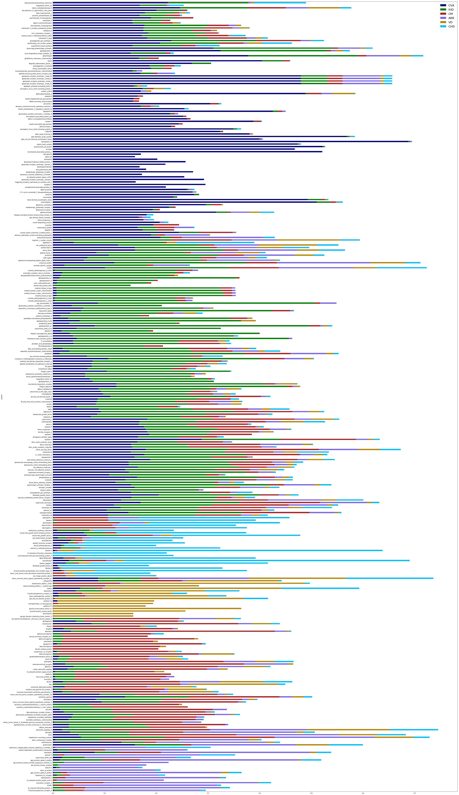

Hierarchical Clustering (with cutoff)
import matplotlib.pyplot as plt
import pandas as pd
import numpy as np
import seaborn as sns
%matplotlib inline
import json
CVD= ['CVA','IHD','CM','ARR','VD','CHD']
clrs = ['navy','green','firebrick',\
'mediumslateblue','darkgoldenrod', 'deepskyblue']
def rearrang(olddf):
col = ['CVA','IHD','CM','ARR','VD','CHD']
newdf = pd.DataFrame()
for t in col:
newdf[t]= olddf[t]
return newdf
with open('../../1.DATA/uniprot/protein2uniprot.json', 'r') as f:
protein2uniprot = json.load(f)
print('all data:',len(protein2uniprot))
data = pd.read_csv('../../1.DATA/score/score.csv')
data = data.set_index('Protein')
ndf = rearrang(data)
ndf.head(2)
|
CVA |
IHD |
CM |
ARR |
VD |
CHD |
| Protein |
|
|
|
|
|
|
| small_ubiquitin-related_modifier_1 |
0.041144 |
0.012216 |
0.078019 |
0.000000 |
0.000000 |
0.024314 |
| metalloproteinase_inhibitor_4 |
0.042887 |
0.054740 |
0.095265 |
0.045032 |
0.034227 |
0.005072 |
ndata = ndf.copy(deep = True)
ndf.describe()
|
CVA |
IHD |
CM |
ARR |
VD |
CHD |
| count |
2869.000000 |
2869.000000 |
2869.000000 |
2869.000000 |
2869.000000 |
2869.000000 |
| mean |
0.040107 |
0.034860 |
0.026862 |
0.010698 |
0.007240 |
0.011746 |
| std |
0.060346 |
0.050428 |
0.038751 |
0.028798 |
0.024030 |
0.032627 |
| min |
0.000000 |
0.000000 |
0.000000 |
0.000000 |
0.000000 |
0.000000 |
| 25% |
0.000000 |
0.000000 |
0.000000 |
0.000000 |
0.000000 |
0.000000 |
| 50% |
0.022209 |
0.018526 |
0.013534 |
0.000000 |
0.000000 |
0.000000 |
| 75% |
0.057229 |
0.045417 |
0.037451 |
0.007516 |
0.000000 |
0.009734 |
| max |
0.686945 |
0.419997 |
0.343774 |
0.305472 |
0.365424 |
0.595544 |
Set Cutoff
solid_cutoff = [0.15,0.15,0.15,0.15,0.15,0.15]
mdata = ndata.copy(deep =True)
dis = ['CVA','IHD','CM','ARR','VD','CHD']
idx = list(mdata.index)
data_dict = []
for item in idx:
data = mdata.loc[item,:]
lst =[data[0],data[1],data[2],data[3],data[4],data[5]]
m = max(lst)
for e,cut in zip(lst,solid_cutoff):
if e == m:
if e > cut:
data_dict.append({'protein':item,\
'CVA':data[0],\
'IHD':data[1],\
'CM':data[2],\
'ARR': data[3],\
'VD':data[4],\
'CHD':data[5]})
cdata = pd.DataFrame(data_dict)
cdata.index = cdata['protein']
cdata = cdata.drop('protein', axis =1)
Clustering
size=(50,50)
g = sns.clustermap(cdata.T.corr(),\
figsize=size,\
cmap = "YlGnBu",\
metric='seuclidean')
g.savefig('cutoff/cluster-cutoff-solid.pdf', format='pdf', dpi=400)
indx = g.dendrogram_row.reordered_ind

protein_cluster = []
for num in indx:
for i,ndx in enumerate(cdata.index):
if num == i:
#print(i+1,ndx)
protein_cluster.append({'id':i,"protein": ndx,\
'ARR' : list(cdata.loc[ndx,:])[0],\
'CHD': list(cdata.loc[ndx,:])[1],\
'CM' : list(cdata.loc[ndx,:])[2],\
'CVA' : list(cdata.loc[ndx,:])[3],\
'IHD' : list(cdata.loc[ndx,:])[4],\
'VD' : list(cdata.loc[ndx,:])[5]})
protein_cluster_df = pd.DataFrame(protein_cluster)
protein_cluster_df = protein_cluster_df.set_index('protein')
protein_cluster_df = rearrang(protein_cluster_df)
protein_cluster_df.head(3)
|
CVA |
IHD |
CM |
ARR |
VD |
CHD |
| protein |
|
|
|
|
|
|
| methylenetetrahydrofolate_reductase |
0.222450 |
0.155409 |
0.000390 |
0.005741 |
0.005021 |
0.100177 |
| coagulation_factor_xii |
0.167927 |
0.052323 |
0.000000 |
0.004614 |
0.000000 |
0.028020 |
| matrix_metalloproteinase-9 |
0.245860 |
0.132204 |
0.072137 |
0.043005 |
0.061532 |
0.022252 |
Heatmap
CVA 0.686945
IHD 0.419997
CM 0.343774
ARR 0.305472
VD 0.365424
CHD 0.595544
dtype: float64
plt.figure(figsize = [22,22])
sns.heatmap(protein_cluster_df,\
cmap="YlGnBu",\
#cmap = sns.cubehelix_palette(1000),\
#cmap = sns.cubehelix_palette(8, start=.5, rot=-.75),\
#cmap = sns.color_palette("Blues"),\
yticklabels=False,\
vmin = 0.15,vmax = 0.70)
plt.savefig('cutoff/heatmap-cutoff-solid.pdf')
Barplot
protein_cluster_df.plot.barh(stacked=True,figsize=(50,100),color =clrs)
plt.gca().invert_yaxis()
plt.legend(fontsize =20)
plt.savefig('cutoff/barplot-cutoff-solid.pdf')

Final Result
U = []
index = list(protein_cluster_df.index)
for p in index:
u = protein2uniprot[p]
U.append(u)
protein_cluster_df['uniprot'] = U
protein_cluster_df.to_csv('cutoff/cluster-list-cutoff-solid.csv')